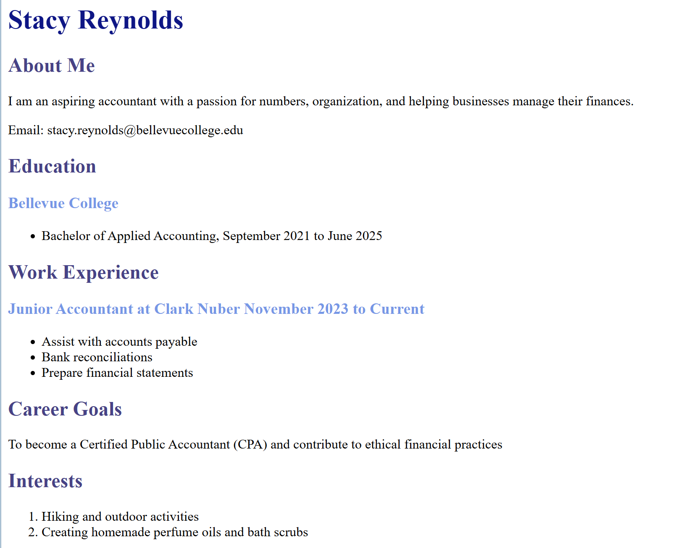

View my profolio!
To view my work click on the links below.
Web Project 1- Resume
In this assignment, I learned how to build a simple web page using basic HTML5. I practiced creating the correct document structure with <!DOCTYPE html>, <head>, and <body> elements, and organize my content with heading, paragraphs and semantic tags. I also learned how to add links, lists, and sections.
 Click HereWeb Project 2- 5 Steps to Starting Your Own Business
In this project I learned how to build a one page website using semantic HTML and internal CSS, applying the Box Model to styld text, images, and sections. I also practiced organizing content, adding accessible images with alt text and citations and using proper structure like headings, sections, and footer.
Click HereWeb Project 3- My Favorite City: Orlando, Flordia
In this project, I learned how to create a full webpage using HTML5 and CSS that highlights a favorite city. I practiced orgaizing content with semantic elements, heading, paragraphs, list, and images while applying CSS for layout, color, margins, and padding. I also learned to float imagae, cite sources, and use meta tags for SEO.
Click HereWeb Project 4- E Book
In this project I learned how to convert plain text from a classic book in structured HTML pages and design them with CSS to create an e-book layout. I practiced using semantic HTML elements, internal and external stylesheets, flexbok for layout and navigation, floating images, accessible alt text, color schemes, and proper formatting for readability across multiple pages.
Click Here